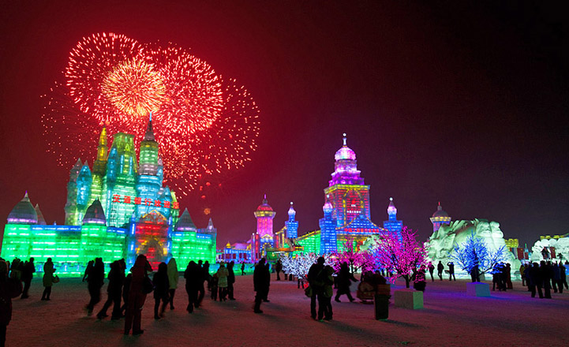

Festivals in Norway

Top 10 celebrations and events
Norway is a country filled with culture and history. There are many famous Norwegian events that are celebrated year round. Below is list of popular Norwegian festivals.
Bergenfest
This festival is celebrated in Bergen, Norway during June 21 - June 24. It is a modern music festival that is celebrated with various concerts and musical acts throughout Bergen. Music artists from all over the world come to Bergen to perform.
Bollywood Fest
This is celebrated in Oslo, Norway and takes place from December 7 - December 14. It is a multicultural film event where actors, actresses, and filmmakers get together and perform in a variety of acts all with an emphasis on Indian culture.
Extreme Sports Week
This festival takes place in Voss and is celebrated from June 24 to July 1. It is a week long celebration of sports and music. Sports range from biking, paragliding, sky diving, rafting, kayaking, and much more. Along with sports there is also a large music portion of this festival where performances from various artists are enjoyed.
Frozen Waterfall Festival
This festival is celebrated in Lillehammer usually during the month of February. Musicians give concerts using instruments that are made out of ice. It is a beautiful sight for anyone to see and the music sounds phenomenal.
Hell Blues Festival
A unique festival that is celebrated in Hell usually in September of each year. This festival takes place in the area surrounding the Hell Railroad station and the focus is on blues music. Various stages are set up and blues artists perform. Along with the music there is also a beautiful art exhibition.
Hole in the Sky - Bergen Metal Fest
The Bergen Metal Fest is a popular music festival that is celebrated in Bergen from August 24 - August 27. This festival focuses on metal music where various artists come to perform.
Molde Jazz Festival
This festival is celebrated in Molde, Norway and takes place in July each year. It is known as one of the oldest jazz festivals in Europe and features well known jazz musicians from various countries.
Northern Lights Festival
The Northern Lights Festival is celebrated in Tromso, from January 26 - February 2. Tromso is one of the best places in the world to view the Northern Lights. The festival features opera, jazz, chamber music, audiovisual art, symphonic concerts, choir, and dance all while watching the sky light up with different colors.
Norwegian Short Film Festival
Celebrated in Grimstad, this festival takes place from June 13 - June 17 every year. Film makers from many different places gather and compete for the best short film contest. It is also a meeting place for young filmmakers to meet well established filmmakers.
World Beard and Moustache Championships
This is a very unique festival that takes place in Trondheim, Norway usually in the month of May. It is a moustache and beard contest where men from all over the world compete in different categories to represent their country. Partial beard, natural beard, natural moustache, and freestyle are just some of the many categories that are judged.
Back to top